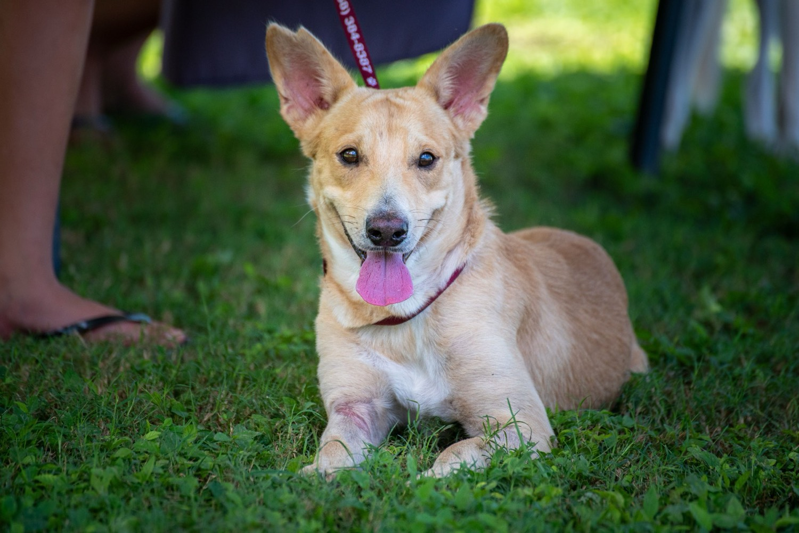

Available Animals
Bella

Species: Dog (Female)
Age: Approximately 3 years
Size: Medium
Temperament: Friendly, gentle, good with children
Bella is a loving mixed-breed girl who was rescued from the streets. She is house-trained,
walks well on a lead, and adores cuddles. She would thrive in a home where she can be
part of the family.
Special notes: Sterilised, vaccinated, microchipped.
Max

Species: Dog (Male)
Age: 2 years
Size: Large
Temperament: Energetic, playful, loyal
Max is a high-energy boy who loves long walks and playing with toys. He is great with
other dogs and would suit an active family or individual.
Special notes: Sterilised, vaccinated, microchipped. Needs a secure garden.
Luna

Species: Cat (Female)
Age: 1 year
Size: Medium
Temperament: Curious, affectionate, independent
Luna is a beautiful young cat who enjoys both playtime and quiet moments on a sunny
windowsill. She is litter-trained and gets along with respectful children.
Special notes: Sterilised, vaccinated, microchipped. Indoor preferred.
Rocky

Species: Dog (Male)
Age: 5 years
Size: Medium
Temperament: Calm, loving, good with other pets
Rocky is a gentle soul who was surrendered when his owner could no longer care for him.
He is calm, well-mannered and looking for a quiet home where he can spend his senior
years surrounded by love.
Special notes: Sterilised, vaccinated, microchipped. Senior-friendly home preferred.
Milo

Species: Cat (Male)
Age: 4 years
Size: Medium
Temperament: Playful, vocal, affectionate
Milo is a charming and talkative cat who loves attention and interactive toys.
He would do best as the only cat or with a calm feline companion.
Special notes: Sterilised, vaccinated, microchipped.